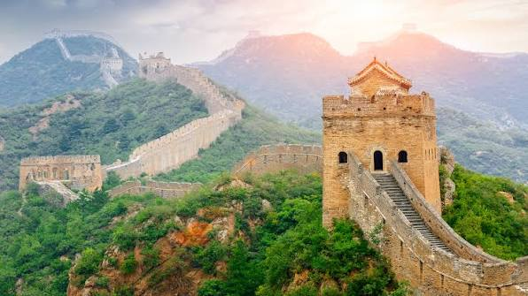

La Gran Muralla China: El Dragón de Piedra

- Ubicación: Norte de China
- Construcción: Siglos V a.C. – XVI d.C.
- Longitud Total: 21,196 kilómetros
- Declaración UNESCO: 1987
1. Historia y Dinastías
La construcción de la muralla no se realizó de una sola vez, sino a lo largo de varias dinastías imperiales para proteger las fronteras del imperio chino contra los ataques de los nómadas del norte (principalmente los mongoles). Fue el primer emperador de la China unificada, Qin Shi Huang, quien unió los primeros tramos, aunque la mayor parte de la estructura que vemos hoy en día fue reconstruida durante la Dinastía Ming.
2. Arquitectura e Ingeniería
Adaptándose a la topografía de montañas empinadas, desiertos y praderas, la muralla fue construida con una variedad de materiales locales como piedra, ladrillo, tierra apisonada y madera. Cuenta con torres de vigilancia estratégicamente ubicadas para transmitir señales de humo y fuego, cuarteles para las tropas y pasos fronterizos fuertemente fortificados.
3. Legado e Impacto Histórico
Además de su función defensiva, la Gran Muralla sirvió como un efectivo control fronterizo para regular el comercio a lo largo de la Ruta de la Seda y gestionar la migración. Se trata del proyecto de ingeniería defensiva más largo y complejo jamás ejecutado por la humanidad.